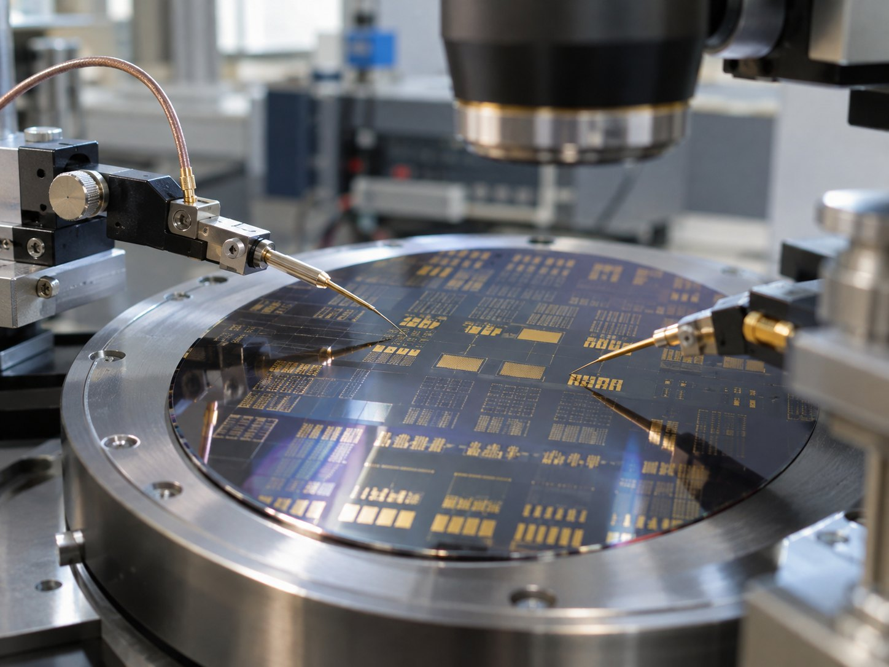
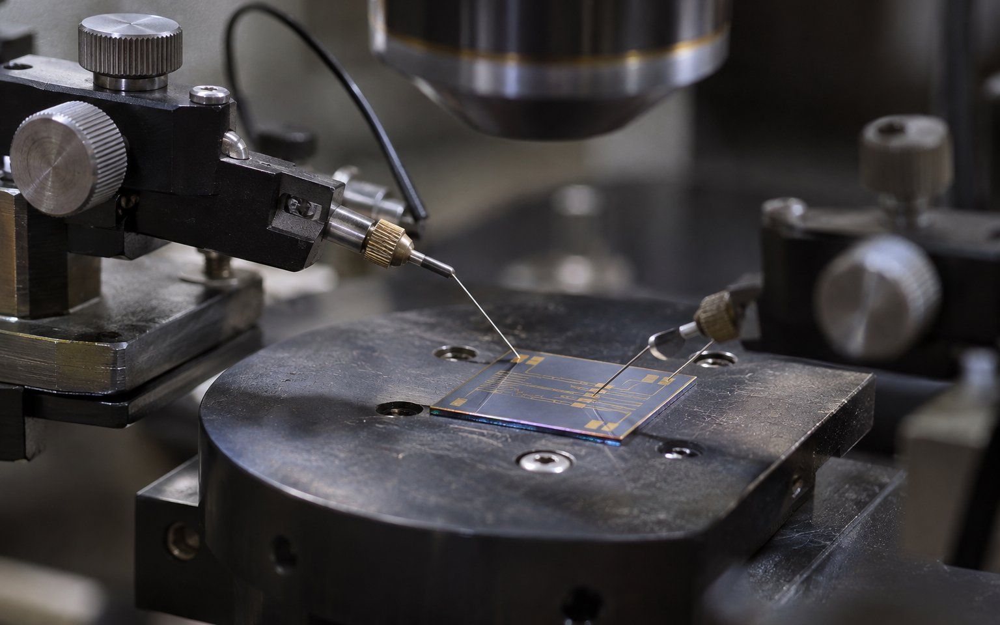
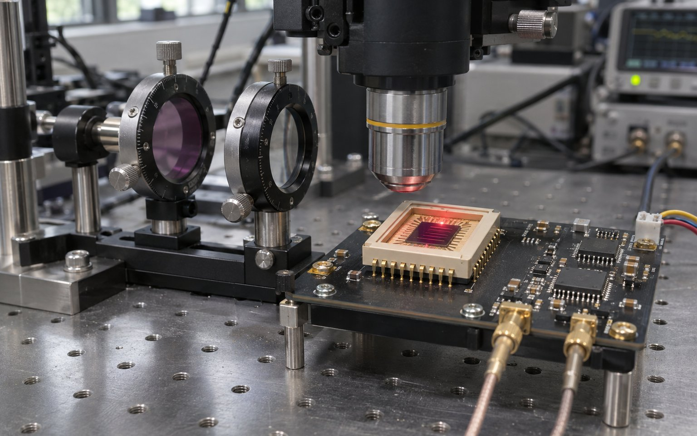

Min Jong Lee
From Interface Physics to Reliable Electronic Systems.
I study memory-device physics and reliability through interface and defect engineering, with a focus on electronic and ionic charge transport. My work connects switching mechanisms, variability, and retention to device characterization and array-level validation across semiconductor and emerging electronic platforms.
Integrated M.S.–Ph.D. Researcher

Research
Different platforms. A common physics. Connected research platforms
Research in Depth
Research Work
Physical mechanisms demonstrated in functional hardware.

Advanced Materials · 2025 First author
Hydrogen-Bonded Analog Memory
PVA–CsPbI₃ hydrogen bonding suppresses interfacial traps and stabilizes linear, symmetric analog updates. A fabricated 7 × 7 crossbar and image-classification evaluation connect device physics to computation.
>8× lower interfacial trap density · ≈12.5 pJ/update · >10⁴ s at 85 °C

Advanced Materials · 2026 Co-first author
Helicity-Encoded Analog Memory
Optical helicity conditions persistent, electrically readable conductance states. A PCB-integrated 7 × 7 array with ADC/FPGA readout validates mixed-signal vector–matrix multiplication.
72 distinguishable states · 10⁶ s retention · PCB/ADC/FPGA readout
Research Outlook
From Understanding Devices to Engineering Reliable Systems. I aim to connect device physics with reliable memory, computing hardware, and integrated electronic systems.
Predictive Memory Reliability Can read noise and stochastic state evolution reveal the origins of analog memory variability and anticipate reliability loss?
Hardware-Aware Memory Computing How do switching variation and read noise propagate into array errors, and which device or peripheral choices can reduce them?
Integrated & Adaptive Electronics How do interface defects and processing conditions govern leakage and long-term stability in advanced thin-film and capacitor structures?
Explore Future Research